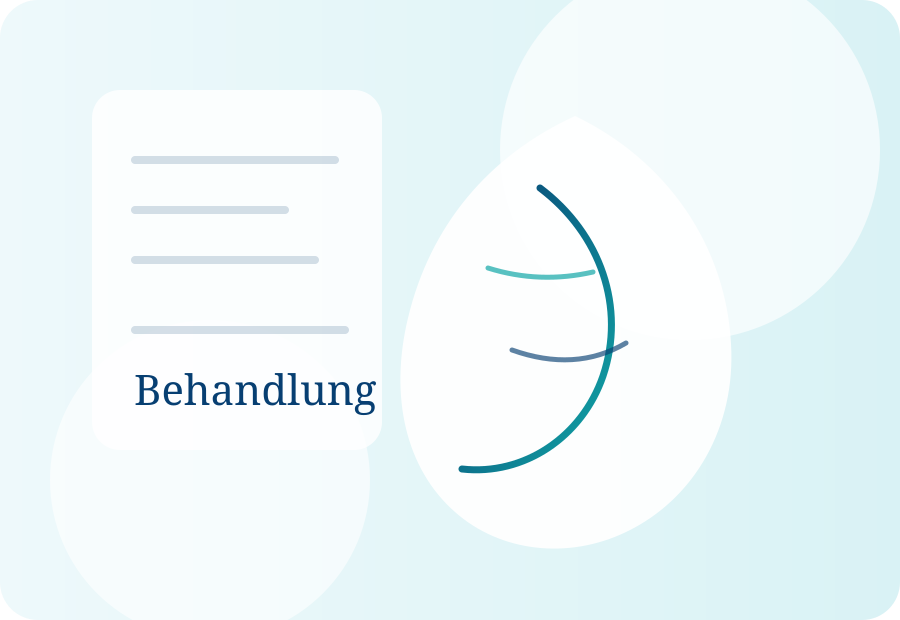

gesicht
Lidstraffung
Ein wacherer Blick bei Schlupflidern oder Tränensäcken – natürlich geplant und präzise durchgeführt.
Beratung anfragen →Behandlungen
Beginnen Sie allgemein und klicken Sie sich Schritt für Schritt zu den Behandlungen, die zu Ihrem Anliegen passen.
Filtern Sie nach Bereich. Die Darstellung bleibt bewusst ruhig und beratend.

Ein wacherer Blick bei Schlupflidern oder Tränensäcken – natürlich geplant und präzise durchgeführt.
Beratung anfragen →Straffungskonzepte für Kontur, Hals und Gesicht, ohne maskenhaften Ausdruck.
Beratung anfragen →Ästhetische und funktionelle Planung mit Blick auf das gesamte Gesicht.
Beratung anfragen →Gezielte Entspannung mimischer Muskulatur für einen frischeren, ruhigeren Ausdruck.
Beratung anfragen →Volumen, Kontur und Feuchtigkeit – sparsam, harmonisch und typgerecht.
Beratung anfragen →Anregung körpereigener Prozesse zur Verbesserung der Hautqualität.
Beratung anfragen →Moderne Verfahren zur Unterstützung von Gewebeheilung und natürlicher Regeneration.
Beratung anfragen →Konturierung lokaler Fettdepots nach sorgfältiger Indikationsstellung.
Beratung anfragen →Straffung und Formung der Bauchregion, besonders nach Gewichtsveränderung oder Schwangerschaft.
Beratung anfragen →Individuelle Planung von Form, Proportion und Implantat-/Eigenfettoptionen.
Beratung anfragen →Entlastung, Formverbesserung und harmonische Proportionen.
Beratung anfragen →Plastische Chirurgie umfasst operative Verfahren; ästhetische Medizin meint häufig minimalinvasive Behandlungen wie Botox, Filler oder Hautverbesserung. In der Beratung wird geklärt, welcher Weg sinnvoll ist.
Nein. Eine seriöse Beratung kann auch bedeuten, von einer Behandlung abzuraten oder zunächst eine mildere Option zu wählen.
Ausgangspunkt sind nicht einzelne Trends, sondern Ihr Anliegen, Ihre Anatomie, Ihre Gesundheit und realistische Ziele.